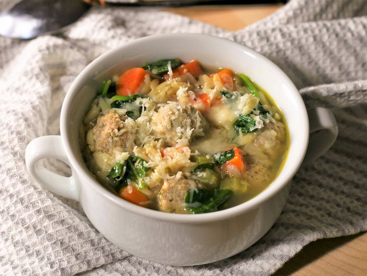

Instant Pot Italian Wedding Soup

Let's get Started
Italian Wedding Soup is a classic hearty soup made with meatballs, pasta, and cheese. There are many versions of this recipe, so feel free to implement your own twist!
Ingredients
- 1 tbsp olive oil
- 1 1/2 cups of chopped carrots
- 1 cup sliced celery
- 1/2 cup of diced red onion
- 1 tsp dried parsley
- 1/4 tsp dried basil
- 1/4 tsp ground black pepper
- 6 cups no-salt-added chicken broth
- 20 italian meatballs
- 1/2 cup pastina pasta
- 6 oz baby spinach
- salt to taste
- 4 tsp grated parmesan cheese
Directions
- Turn on a multi-functional pressure cooker (such as Instant Pot) and select Sauté function. Pour in olive oil and heat until hot. Cook and stir carrots, celery, and onion in hot oil until tender, 4 to 5 minutes. Season with parsley, basil, and pepper. Pour in chicken broth and add meatballs. Close and lock the lid. Close the valve and select the Soup function according to manufacturer's instructions; set the timer for 3 minutes. Allow 10 to 15 minutes for pressure to build.
- Release pressure carefully using the quick-release method according to manufacturer's instructions, about 5 minutes. Unlock and remove the lid. Stir in pasta. Replace the lid. Close the valve and select the Soup function according to manufacturer's instructions; set the timer for 3 minutes. Allow 10 to 15 minutes for pressure to build.
- Release pressure carefully using the quick-release method according to manufacturer's instructions, about 5 minutes. Unlock and remove the lid. Stir in spinach. Let soup sit until spinach is wilted and pasta is fully cooked, about 5 minutes. Season with salt.
- Ladle into bowls and top with parmesan cheese